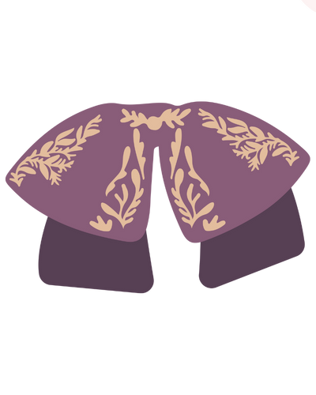
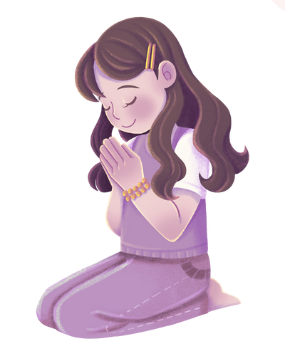

Conceptos básicos
Conceptos básicos
 Paso a paso
Paso a paso
 Reuniones y recursos
Reuniones y recursos
Todo lo que debes tener claro antes de iniciar
calendar_month Fechas
play_arrow Iniciamos el lunes 5 de enero del 2026.check Terminamos el Domingo de Resurección, 5 de abril del 2026.
timer Empezamos en
Días
Horas
Minutos
map_pin_heart Ubicación
Dentro de la Zona Metropolitana de Guadalajara. Definiciones
anchor Tu ancla: tu guía espiritual
Qué hace tu ancla:
- Guía tu oración: te ayuda a descubrir formas de oración y a escuchar la voz de Dios.
- Fomenta el discernimiento: te acompaña en decisiones importantes y en tu vocación.
- Acompaña tu crecimiento: orienta tu vida interior y desarrollo de virtudes.
- Escucha y discierne: te ayuda a reconocer la acción de Dios en tu vida.
- Ofrece ánimo y responsabilidad: motiva y sostiene tu compromiso hasta completar el programa.
Quién puede ser tu ancla:
- Sacerdotes o diáconos.
- Personas consagradas.
- Personas maduras en la fe, con formación y experiencia, que sean modelos de vida cristiana.
diversity_3 En comunidad
Comunidad General
Somos todas las que vivimos esta experiencia. Tendremos tres reuniones grupales:- Primera reunión (virtual): antes de iniciar, para explicar el programa y resolver dudas.
- Segunda reunión (alrededor del día 45): para revisar avances, aclarar dudas y motivarnos a seguir.
- Tercera reunión (al terminar): para celebrar y compartir experiencias y logros.
- Recibir actualizaciones oficiales sobre reuniones y actividades.
- Recordar fechas importantes y momentos clave.
- Mantenerte conectada con toda la comunidad.
diversity_1 Subgrupos: tu círculo íntimo
¿Cómo se forman?
Al dar click en PARTICIPAR CON NOSOTRAS, llenarás un formulario breve para asignarte a un grupo con mujeres afines a ti.¿Cómo se vive un subgrupo?
- Contacto diario para apoyo y motivación.
- Reunión presencial: ustedes eligen día, hora, formato y frecuencia, lo recomendado es semanalmente.
- Caminata al aire libre y reflexión.
- Café y conversación profunda.
- Encuentro para visitar al Santísimo.
- O cualquier dinámica que nutra su fe y amistad.
¿Para qué sirven estas reuniones?
Son un espacio para:- Reconocer la presencia de Dios en tu semana.
- Compartir luchas y gracias.
- Detenerte, respirar y abrir el corazón.
- Vivirlo acompañada por hermanas en la fe.
Dios nos hizo para vivir en comunidad y estas mujeres serán tu tribu espiritual durante 90 días.
Disciplinas: tu ‘sí’ a Dios
FIAT90 no busca llenarte de actividades, sino de discernir los cambios, hábitos o sacrificios diarios que te ayudan a escuchar a Dios y decirle tu “sí” cada día. No hay una forma perfecta de vivirlas: ada mujer adapta su camino según su vida, responsabilidades y situación. Lo importante es vivirlas con gracia y perseverancia..
Consejos para elegir tus disciplinas:
- Ora y discierne cuáles estás llamada a vivir.
- Adáptalas según tu vida diarias.
- No busques perfección, sino un corazón dispuesto a decir “sí”.
mindfulness Disciplinas Estilo de Vida
- No chismear: el chisme genera separación y discordia, incluso disfrazado de conversación inocente.
- Aumentar mi agradecimiento y eliminar la queja.
- Limitar la TV y las películas: solo verlas con otros y por un propósito específico.
- Reducir el consumo de música, podcasts y medios seculares.
- No usar el teléfono después de las 9:00 p.m.
- Abstenerme de redes sociales: solo usar para trabajo.
- Evitar compras innecesarias como sacrificio y acto de desapego.
sports_gymnastics Disciplinas Físicas
- Ayunar (adaptado según necesidades de salud).
- Abstenerme de dulces, alcohol, postres y snacks.
- Levantarme al primer sonido de la alarma cada mañana.
- Realizar ejercicio o actividad física 3-5 veces por semana.
relax Disciplinas Espirituales
- Adopción espiritual: oracion ofrecida por una persona.
- Novena del Rosario de 54 días.
- Consagración Mariana según San Luis de Montfort o el programa de 33 días.
- Misa diaria.
- Hacer examen de conciencia cada noche.
- Oraciones individuales.
- Confesión quincenal o mensual.
- Lectura bíblica diaria según el esquema proporcionado.
- Adoración Eucarística semanal. Puede ser en casa, una hora de silencio con el Señor.
¿Puedo iniciarlo en otra fecha?
Este programa lo puedes vivir cuando tu quieras, nosotras lo haremos en las fechas señaladas.
¿Puedo hacerlo si no vivo en la ZMG?
Claro. Si estás fuera de la ZMG, crea un pequeño grupo local para compartir el camino.
¿Puedo cambiar de Ancla en los 90 días?
Sí, puedes cambiar de ancla si sientes que no estás recibiendo
el acompañamiento necesario.
Busca a alguien que realmente cumpla con las características y
pueda guiarte en el camino.
¿Qué pasa si no puedo asistir a alguna de las reuniones generales?
Mantén tu compromiso personal. Cada pequeño ‘sí’ cuenta.
¿Puedo elegir mi propio subgrupo?
Sí. Elige mujeres con quienes puedas crecer, compartir y perseverar.
¿Qué pasa si no estoy cómoda en mi subgrupo?
Si no te acomoda, es válido cambiar de subgrupo. Solo recuerda que estos no pueden ser mayores a 6 mujeres.
¿Qué pasa si no puedo ir a las reuniones de mi subgrupo?
Tu compromiso individual sostiene al colectivo. Si no puedes asistir, permanece fiel en oración y prácticas; tu ‘sí’ a Dios continúa transformando.
¿Que pasa si parte de mi trabajo es con redes sociales?
Las disciplinas son flexibles. Lo esencial es que te permitan dedicar momentos conscientes a Dios, incluso si tu trabajo requiere estar en línea.